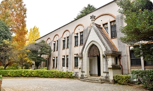
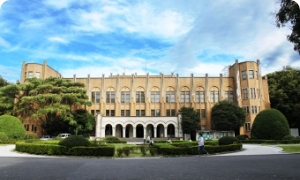
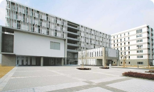

法学部
法学部では、法学だけでなく、それと政治学とが対をなすものとして研究され、教育されており、法学部生には、法的思考や政治学的識見の基礎を、自らのもの とすることが期待されています。

医学部
医学は生命現象を明らかにするという学術としての重要性を一方で持ち、他方では人類の福祉に貢献し、疾病の克服を実現するという点で応用科学としても大きな意義を持つ学問です。
工学部
人類の福祉、健康、安心・安全のために新しいモノやコトをつくる学問体系です。東京大学工学部は、1886年に帝国大学工科大学として誕生して以来、時代とともに変化する社会の要請に応えるため、常にダイナミックに変化してきました。

文学部
文学部の理念とは、人間とその社会を哲学や宗教、歴史、言語、文学、さらには心理学や社会学など、じつに多様な観点から、自由な発想と方法を用いて探求することである。